Ejercicios de números racionales
1 Pasar a fracción:
2 Realiza las siguientes operaciones con potencias:
1 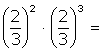
2 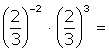
3 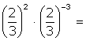
4 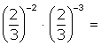
5 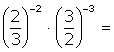
6 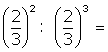
7 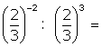
8 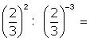
9 
10 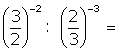
11 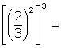
12 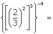
13 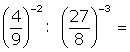
3 Opera:
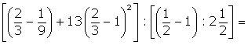
4 Efectúa

5 Calcula qué fracción de la unidad representa:
1 La mitad de la mitad.
2 La mitad de la tercera parte.
3 La tercera parte de la mitad.
4 La mitad de la cuarta parte.
6 Elena va de compras con 180 €. Se gasta 3/5 de esa cantidad.¿Cuánto le queda?
7 Dos automóviles A y B hacen un mismo trayecto de 572 km. El automóvil A lleva recorridos los 5/11 del trayecto cuando el B ha recorrido los 6/13 del mismo. ¿Cuál de los dos va primero? ¿Cuántos kilómetros lleva recorridos cada uno?
8 Hace unos años Pedro tenía 24 años, que representan los 2/3 de su edad actual. ¿Qué edad tiene Pedro?
9 En las elecciones locales celebradas en un pueblo, 3/11 de los votos fueron para el partido A, 3/10 para el partido B, 5/14 para C y el resto para el partido D. El total de votos ha sido de 15 400. Calcular:
1 El número de votos obtenidos por cada partido.
2 El número de abstenciones sabiendo que el número de votantes representa 5/8 del censo electoral.
10 Un padre reparte entre sus hijos 1 800 €. Al mayor le da 4/9 de esa cantidad, al mediano 1/3 y al menor el resto. ¿Qué cantidad recibió cada uno? ¿Qué fracción del dinero recibió el tercero?

- 1
- 2
- 3
- 4
- 5
- 6
- 7
- 8
- 9
- 10
Solución del ejercicio 1
Pasar a fracción:
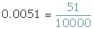
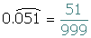
Solución del ejercicio 2
Realiza las siguientes operaciones con potencias:
1
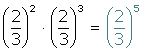
2
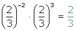
3
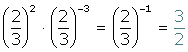
4
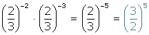
5
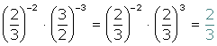
6
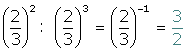
7
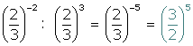
8
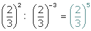
9 
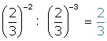
10
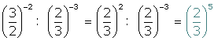
11
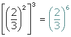
12
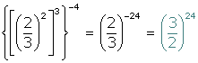
13
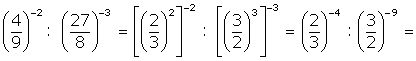
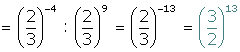
Solución del ejercicio 3
Opera:


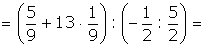
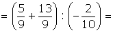
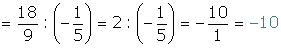
Solución del ejercicio 4
Efectúa

Solución del ejercicio 5
Calcula qué fracción de la unidad representa:
1 La mitad de la mitad.

2 La mitad de la tercera parte.
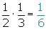
3 La tercera parte de la mitad.

4 La mitad de la cuarta parte.
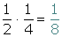
Solución del ejercicio 6
Elena va de compras con 180 €. Se gasta 3/5 de esa cantidad.¿Cuánto le queda?

Solución del ejercicio 7
Dos automóviles A y B hacen un mismo trayecto de 572 km. El automóvil A lleva recorridos los 5/11 del trayecto cuando el B ha recorrido los 6/13 del mismo. ¿Cuál de los dos va primero? ¿Cuántos kilómetros lleva recorridos cada uno?
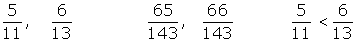
El segundo automóvil va primero.

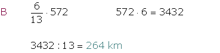
Solución del ejercicio 8
Hace unos años Pedro tenía 24 años, que representan los 2/3 de su edad actual. ¿Qué edad tiene Pedro?


Solución del ejercicio 9
En las elecciones locales celebradas en un pueblo, 3/11 de los votos fueron para el partido A, 3/10 para el partido B, 5/14 para C y el resto para el partido D. El total de votos ha sido de 15 400. Calcular:
1 El número de votos obtenidos por cada partido.
2 El número de abstenciones sabiendo que el número de votantes representa 5/8 del censo electoral.


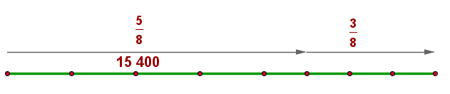

Solución del ejercicio 10
Un padre reparte entre sus hijos 1 800 €. Al mayor le da 4/9 de esa cantidad, al mediano 1/3 y al menor el resto. ¿Qué cantidad recibió cada uno? ¿Qué fracción del dinero recibió el tercero?


 Ejercicios
Ejercicios